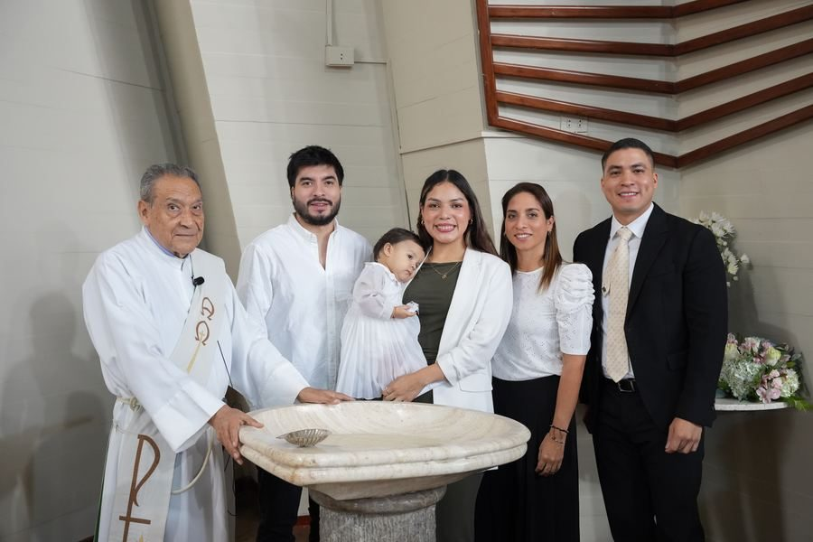
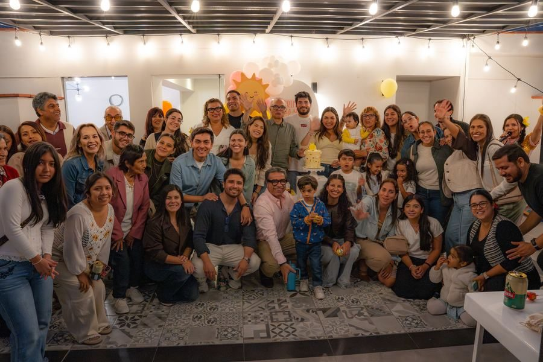

¿Cuánto cuesta un fotógrafo de eventos en Lima?
Qué cambia entre una cobertura breve, una completa y una experiencia premium.
Leer la guíaGuías para tu evento
Respuestas directas para elegir cobertura, preparar cada momento y llegar al día de tu evento con un plan claro.
Qué cambia entre una cobertura breve, una completa y una experiencia premium.
Leer la guía
Las preguntas que ayudan a comparar propuestas y cuidar los momentos irrepetibles.
Leer la guía
Una guía para saber qué esperar antes, durante y después de la celebración.
Leer la guía